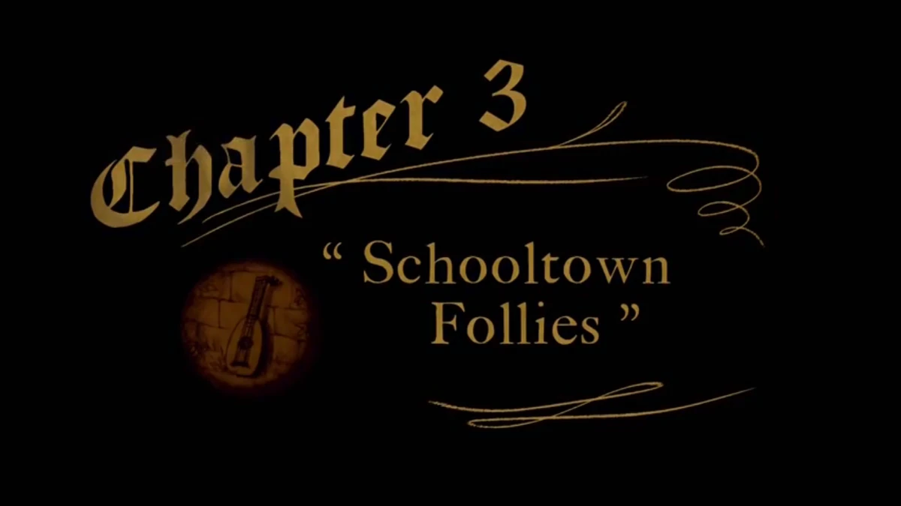
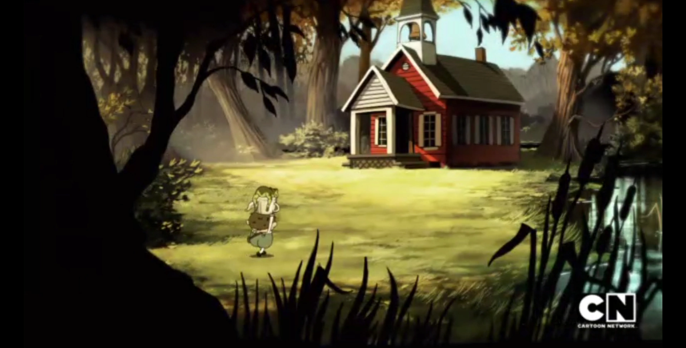
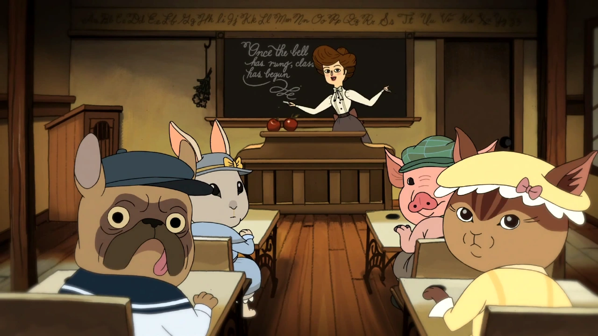
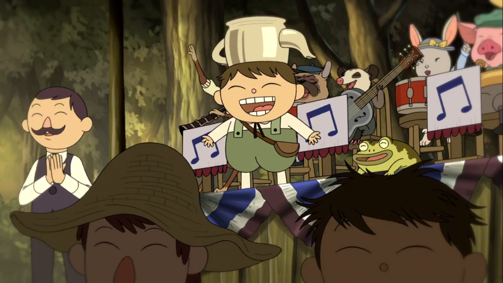
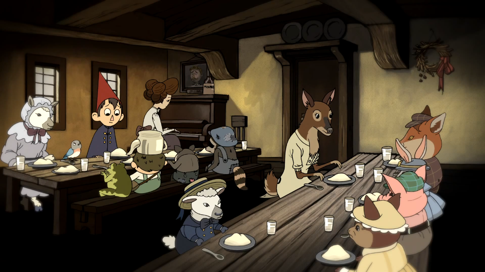
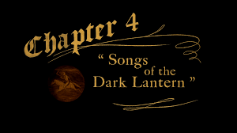
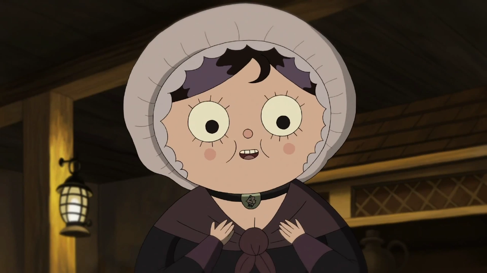
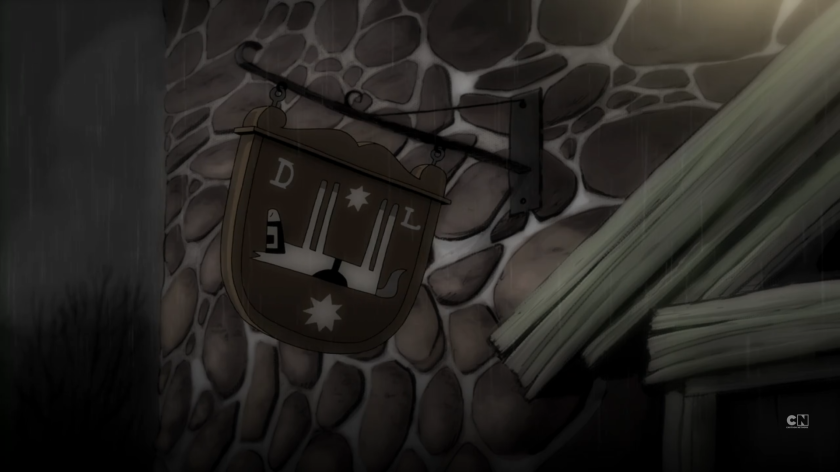
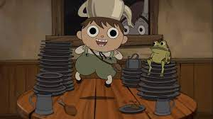
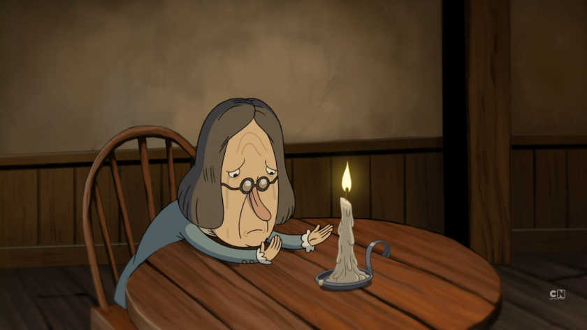

Episode 3: "Schooltown Follies" Wirt, Gregory, his Frog, and Beatrice stumble across a school run by Miss Langtree where all the students are animals. Miss Langtree's father, who invested in the school to teach animals how to read and write, threatens to shut it down. Also, there's a gorilla on the loose! Greg, Wirt, and Beatrice come across a schoolhouse, which they enter. Miss Langtree, the teacher, sings Langtree's Lament, causing Greg to try and cheer her up by singing Potatoes and Molasses with the animals from outside. Mr. Langtree takes the instruments and sends the students to bed. The trio sneaks out to steal the instruments, and the animals use them for a fundraiser concert. They meet a man in a gorilla costume, who is revealed to be Jimmy Brown, Miss Langtree's lost love. They all perform a reprise of Potatoes and Molasses. Beatrice tells Wirt to let Greg have his fun while reminding him to tie his shoe. 1 / 5  2 / 5  3 / 5  4 / 5  5 / 5  ❮ ❯
Episode 4: "Songs of the Dark Lanturn" Wirt, Gregory, and Beatrice come to a tavern and meet people from various professions. Wirt is supposed to be asking directions to Adelaide's house but instead, he gets caught up in a song by the Toymaker. The Tavern Keeper warns Wirt about The Beast through a song and tells him that whoever has the lantern must be The Beast, leading Wirt to believe that the Woodsman is actually The Beast. When he hears Beatrice in trouble, he rushes to help her and runs into the Woodsman again. He knocks the lantern over, and he, Greg, and Beatrice escape on a talking horse, who is leading them to Adelaide's. In this episode of "Over the Garden Wall," Wirt, Gregory, and Beatrice find themselves at a tavern where they meet various archetypal characters. The tavern keeper sings a song warning of the Beast who seeks out lost children and turns them into trees of oil to burn in his lantern. After leaving the tavern, Beatrice is attacked and knocked unconscious by a shadow, and Wirt and Gregory find themselves face-to-face with the Woodsman, who is in possession of the Dark Lantern. The Woodsman explains that the Beast seeks the lantern to keep his daughter's flame burning, and the Beast himself appears, asking the Woodsman which direction the children have gone. The Woodsman refuses to say, and the Beast retreats into the woods. Trivia It is revealed that Greag and Wirt are half brothers 1 / 5  2 / 5  3 / 5  4 / 5  5 / 5  ❮ ❯